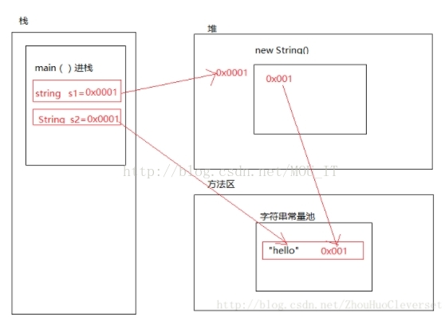
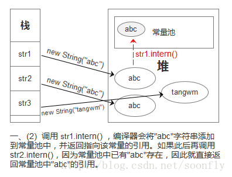
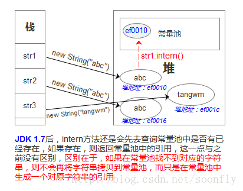

因为String是非常常用的类, jvm对其进行了优化, jdk7之前jvm维护了很多的字符串常量在方法去的常量池中, jdk后常量池迁移到了堆中
方法区是一个运行时JVM管理的内存区域，是一个线程共享的内存区域，它用于存储已被虚拟机加载的类信息、常量、静态常量等。
所以看这个例子：
String str1 = "hello";
String str2 = "hello";
System.out.println(str1 == str2);//trueString a = new String("abc")；new这个关键字，毫无疑问会在堆中分配内存，创建一个String类的对象。因此，a这个在栈中的引用指向的是堆中的这个String对象的。
然后，因为"abc"是个常量，所以会去常量池中找，有没有这个常量存在，没的话分配一个空间，放这个"abc"常量，并将这个常量对象的空间地址给到堆中String对象里面；如果常量池中已经有了这个常量，就直接用那个常量池中的常量对象的引用呗，就只需要创建一个堆中的String对象。
new构造方法中传入字符串常量, 会在堆中创建一个String对象, 但是这个对象不会再去新建字符数组(value) 来存储内容了, 会直接使用字符串常量对象中字符数组(value)应用,
具体方法参考
/** * Initializes a newly created {@code String} object so that it represents * the same sequence of characters as the argument; in other words, the * newly created string is a copy of the argument string. Unless an * explicit copy of {@code original} is needed, use of this constructor is * unnecessary since Strings are immutable. * * @param original * A {@code String} */ public String(String original) { this.value = original.value; //只是把传入对象的value和引用传给新的对象, 两个对象其实是共用同一个数组 this.hash = original.hash; }value 虽然是private修饰的, 但是构造方法中通过original.value;还是可以直接获取另外一个对象的值. 因为这两个对象是相同的类的对象

所以有下面的结果
public static void main(String[] args) {
String s1 = new String("hello");
String s2 = "hello";
String s3 = new String("hello");
System.out.println(s1 == s2);// false
System.out.println(s1.equals(s2));// true
System.out.println(s1 == s3);//false
}String s1 = "hello" + "word";
String s2 = "helloword";
System.out,println(s1 == s2);//true这里的true 是因为编译期直接就把 s1 优化成了 String s1 = "helloword"; 所以后面相等
public static void main(String[] args) {
String s1 = "a";
String s2 = "b";
String s3 = new String("b");
String s4 = s1 + s3;
String s5="ab";
String s6 = s1 + s2;
String s66= s1 + s2;
String s7 = "a" + s2;
String s8 = s1 + "b";
String s9 = "a" + "b";
System.out.println(s2 == s3); //false
System.out.println(s4 == s5); //false s4 是使用了StringBulider来相加了
System.out.println(s4 == s6); //false s4和s6 两个都是使用了StringBulider来相加了
System.out.println(s6 == s66); //false 两个都是使用了StringBulider来相加了
System.out.println(s5 == s7); //false s7是使用了StringBulider来相加了
System.out.println(s5 == s8); //false s8是使用了StringBulider来相加了
System.out.println(s7 == s8); //false 两个都是使用了StringBulider来相加了
System.out.println(s9 == s8); //false 两个都是使用了StringBulider来相加了
}总结下就是：
两个或者两个以上的字符串常量直接相加，在预编译的时候“+”会被优化，相当于把两个或者两个以上字符串常量自动合成一个字符串常量.
编译期就会优化, 编译的字节码直接就把加号去掉了, 直接定义一个常量
其他方式的字符串相加都会使用到 StringBuilder的.
这是一个native的方法，书上是这样描述它的作用的：如果字符串常量池中已经包含一个等于此String对象的字符串，则返回代表池中这个字符串的String对象；否则，将此String对象包含的字符添加到常量池中，并返回此String对象的引用。
并提到，在JDK1.6及其之前的版本，由于常量池分配在永久代内，我们可以通过-XX:PermSize和-XX:MaxPermSize限制方法区的大小从而间接限制常量池的容量。
不仅如此，在intern方法返回的引用上，JDK1.6和JDK1.7也有个地方不一样，来看看书本上给的例子：
public static void main(String[] args) {
String str1 = new StringBuilder("计算机").append("软件").toString();
System.out.println(str1.intern() == str1);
String str2 = new StringBuilder("ja").append("va").toString();
System.out.println(str2.intern() == str2);
}这段代码在JDK1.6中，会得到两个false，在JDK1.7中运行，会得到一个true和一个false。
书上说，产生差异的原因是：在JDK1.6中，intern()方法会把首次遇到的字符串实例复制到永久代中，返回的也是永久代中这个字符串实例的引用，而由StringBuilder创建的字符串实例在Java堆上，所以必然不是同一个引用，将返回false。
而JDK1.7的intern()不会再复制实例，只是在常量池中记录首次出现的实例的引用，因此intern()返回的引用和StringBuilder创建的那个字符串的实例是同一个。对str2比较返回false是因为"java"这个字符串在执行StringBuilder.toString()之前就已经出现过，字符串常量池中已经有它的引用了，不符合“首次出现”的原则，而“计算机软件”这个字符串则是首次出现的，因此返回true。
jdk6和7 的差异是因为 7中常量池移动到堆中了, 并且对于常量池的处理也有差异, 6会把堆中的字符串复制一份副本到常量池中,
7 只是把堆中的字符串对象的引用放入常量池中, 所以第一个str1.intern()返回的也只是一个指向堆中对象的引用, 所以第一个出现false.
7的第二个false 是因为常量池中已经有了"Java"对象了, 所以str2.intern()返回的是指向常量池中对象的引用, str2是指向堆中对象的引用, 所以false
只是为了提高速度, 把常量池中的字符串常量维护了一个hashTable. 方便查找常量
这里先再提一下字符串常量池，实际上，为了提高匹配速度，也就是为了更快地查找某个字符串是否在常量池中，Java在设计常量池的时候，还搞了张stringTable，这个有点像我们的hashTable，根据字符串的hashCode定位到对应的桶，然后遍历数组查找该字符串对应的引用。如果找得到字符串，则返回引用，找不到则会把字符串常量放到常量池中，并把引用保存到stringTable了里面。
在JDK7、8中，可以通过-XX:StringTableSize参数StringTable大小
jdk1.6及其之前的intern()方法
在JDK6中，常量池在永久代分配内存，永久代和Java堆的内存是物理隔离的，执行intern方法时，如果常量池不存在该字符串，虚拟机会在常量池中复制该字符串，并返回引用；如果已经存在该字符串了，则直接返回这个常量池中的这个常量对象的引用。所以需要谨慎使用intern方法，避免常量池中字符串过多，导致性能变慢，甚至发生PermGen内存溢出。
看一个图片来理解下：（图片来自https://blog.csdn.net/soonfly/article/details/70147205）

当然，这个常量池和堆是物理隔离的。
总之就是，要抓住“复制”这个字眼，常量池中存的是内容为"abc"的常量对象。
看个详细点的例子：
public static void main(String[] args) {
String a = new String("haha");
System.out.println(a.intern() == a);//false
}首先，见到"haha"，产量池中没有这个常量，所以会在常量池中放下这个常量对象，底层是通过ldc命令，"haha"被添加到字符串常量池，然后在stringTable中添加该常量的引用（引用好像是这个String对象中的char数组的地址），而a这个引用指向的是堆中这个String对象的地址，所以肯定是不同的。（而且一个在堆，一个在方法区中）。
jdk1.7的intern()方法
JDK 1.7后，intern方法还是会先去查询常量池中是否有已经存在，如果存在，则返回常量池中的引用，这一点与之前没有区别，区别在于，如果在常量池找不到对应的字符串，则不会再将字符串拷贝到常量池，而只是在常量池中生成一个对原字符串的引用。简单的说，就是往常量池放的东西变了：原来在常量池中找不到时，复制一个副本放到常量池，1.7后则是将在堆上的地址引用复制到常量池。
当然这个时候，常量池被从方法区中移出来到了堆中。
看个图：
（图片来自https://blog.csdn.net/soonfly/article/details/70147205）

所以再看回我们书上的那个例子
public static void main(String[] args) {
String str1 = new StringBuilder("计算机").append("软件").toString();
System.out.println(str1.intern() == str1);
String str2 = new StringBuilder("ja").append("va").toString();
System.out.println(str2.intern() == str2);String str2 = new String("str")+new String("01");
str2.intern();
String str1 = "str01";
System.out.println(str2==str1);//true这个返回true的原因也一样，str2的时候，只有一个堆的String对象，然后调用intern，常量池中没有“str01”这个常量对象，于是常量池中生成了一个对这个堆中string对象的引用。
然后给str1赋值的时候，因为是带引号的，所以去常量池中找，发现有这个常量对象，就返回这个常量对象的引用，也就是str2引用所指向的堆中的String对象的地址。
所以str2和str1指向的是同一个东西，所以为true。
jdk7中虽然是把引用复制到常量池中, 但是不影响常量池的功能, 常量池就是减少常量的创建, 增加性能. 常量池中是引用还是能起到减少常量的作用, 因为引用最终还是会指向真实的对象.
https://www.cnblogs.com/wangshen31/p/10404353.html